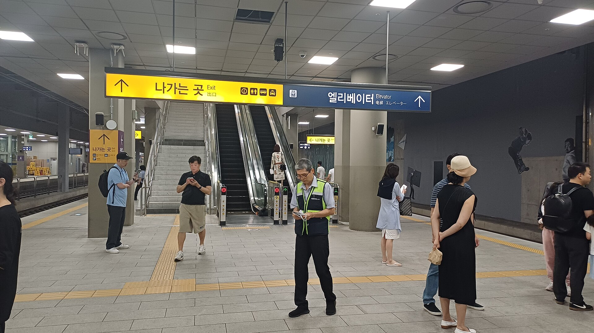
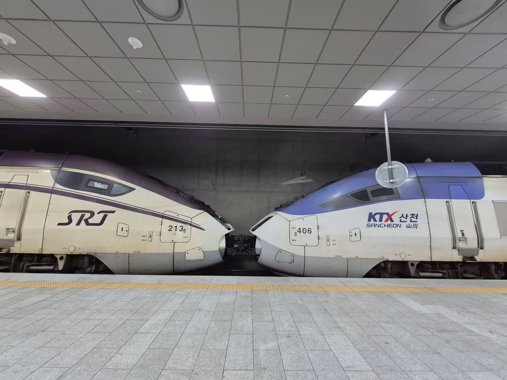

고속철도 통합 60일, 늘어난 승객 절반 넘게 수서축
수서축 이용객 29.5% 증가, 나머지 노선 약 7%
두 달 혜택 515억원, 파업 예고와 선로 병목
AI경제저널=김갑봉 기자 | 국토교통부 공표 수치로 셈하면 고속철도 통합 60일 동안 늘어난 승객 절반 넘게 수서축에서 나왔다. 국토부 집계로 9월 1일부터 10월 30일까지 하루 평균 이용객은 32만2000명이다. 1년 전보다 3만6000명(12.6%) 늘었다.

수서축 29.5%, 나머지 노선 약 7%
수서축 하루 평균 이용객은 약 9만명으로 1년 전보다 29.5% 늘었다. 수서축을 뺀 나머지 노선은 약 21만7000명에서 23만2000명으로 7%가량 늘었다. 공표 수치로 연구소가 셈하면 이용객 비중 28%인 수서축이 증가분의 약 57%인 2만명 남짓을 채웠다.
수서축은 통합 첫날인 9월 1일 공급좌석을 1년 전보다 30.5% 늘렸다. 그날 수서축 이용객은 6만4000명으로 11.3% 늘었다. 두 달 평균 이용객 증가율은 29.5%다. 국토부는 수서축을 만성적 좌석난에 따라 운행과 좌석을 늘린 구간으로 적었다.
환승객도 늘었다. 고속철도와 일반철도 사이 환승할인을 일원화한 뒤 하루 환승객은 6110명에서 9441명이 됐다. 증가율은 54.4%다. 9월과 10월 고객만족도 조사에서 긍정응답은 81.6%와 82.2%였다.
2019년 실증 분석, KTX는 공급·SRT는 할인
손진용은 2019년 서울대 행정대학원 석사논문에서 경쟁체제 아래 운임할인 효과를 분석했다. 대상은 2018년 4~6월 서울~부산 경부고속철도와 1년 전 같은 기간이다. 공급량과 할인 여부를 변수로 넣은 위계적 다중회귀로 이용객과 매출을 추정했다.
KTX 이용객은 주중과 주말 모두 할인에 유의한 반응이 없었고 공급량에만 반응했다. SRT 이용객은 주중과 주말 모두 할인에 유의하게 반응했다. 고속철도 전체 매출에는 할인이 유의한 영향을 주지 않았다.
고속철도 전체로 보면 주말에는 할인 효과가 유의하게 나왔다. 손진용은 그 까닭을 주말 공급이 이미 최대여서 변동이 작았던 데서 찾았다. SRT에서 할인 효과가 나온 까닭으로는 KTX보다 작은 규모를 들었다.
공정거래위원회는 8월 2일 코레일과 SR의 기업결합 승인을 발표했다. 두 회사가 공정위·국토부와 협의한 3년간 사업계획에는 KTX 운임을 SRT 수준으로 10% 내리는 내용이 담겼다. SRT 노선 이용객도 결제 금액의 5%를 마일리지로 쌓는다.
주말 공급좌석은 1만7000석 이상, 운행은 25회 이상 늘린다. 공정위와 국토부는 실무협의체를 꾸려 3년 동안 이행을 점검한다. 공정위는 전체 433개 고속철도 노선 가운데 두 회사가 함께 달리던 155개 노선을 중점 심사했다.
두 회사는 모두 정부가 지배하는 공기업이어서 간이심사 대상이었지만 공정위는 심층 심사를 했다. 운임이나 좌석·서비스를 바꾸려면 국토부 장관의 신고 수리나 인가가 필요하다는 점도 짚었다. 공정위는 경쟁을 제한할 우려가 낮다고 판단했다.
두 달 혜택 515억원, 15년째 오르지 않은 운임
국토부는 두 달 동안 운임할인과 마일리지 등으로 약 515억원의 혜택이 돌아갔다고 밝혔다. 하루 약 8억6000만원이다. 하루 평균 이용객에 60일을 곱한 연인원 약 1932만명으로 나누면 이용 1회당 약 2670원이다. 어린이·청소년·경로·임산부 할인은 SRT 구간까지 넓어졌다.
코레일의 2025년 연결 영업손실은 3524억원이었다. 부채비율은 2025년 말 280.2%로 3년 연속 올랐다. 미처리결손금은 2025년 말 12조7126억원이다.
KTX 운임은 2011년 3.3% 오른 뒤 15년째 인상이 없었다. 김태승 코레일 사장은 5월 14일 기자간담회에서 "고속철도 요금이 15년째 동결 상태라 재무적 압박이 크다"고 말했다. 다만 "당장 요금 인상 계획은 없다"고 했다.
149분 대기, 12월 파업 예고, 2028년 선로
추석 승차권 예매 최대 대기시간은 9월 7일 22.5분에서 11일 149.2분까지 늘었다. 정희용 국회의원실 자료를 보면 코레일은 46억3100만원을 들여 예매 서버 CPU를 늘리려 했다. 기존 CPU와 섞어 쓸 수 없다는 점이 드러나 5월 사업을 접었다. 코레일은 계약 전에 멈췄다고 해명했다.
전국철도노동조합은 11월 5일 쟁의행위 찬반투표 결과 투표자 2만1634명 가운데 1만6783명(77.58%)이 찬성했다고 밝혔다. 재적 대비로는 67.97%다. 요구는 승진제도 개선과 안전인력 확충이다. 교섭에 진전이 없으면 12월 총파업을 포함한 총력 투쟁에 나설 방침이다.
코레일은 통합 부문 대체인력 등을 쓰면 2024년 파업 때 66.8%였던 운행률을 75.2%까지 높일 수 있다고 예상했다. 코레일은 총파업에 이르지 않게 추가 협상에 나서겠다고 밝혔다. 김태승 사장은 10월 국정감사에서 대체인력으로 최소 75% 운행을 지키겠다고 답했다.
평택~오송 46.9km 구간에는 수서발과 서울발 고속철도가 함께 달린다. 2026년 5월 기준 하루 179회(KTX 119회, SRT 60회) 운행 슬롯이 모두 찼다. 2복선화가 끝나면 이 구간 선로용량은 두 배로 늘어난다. 개통 목표는 2028년이다.
그 사이 코레일은 KTX와 SRT 두 편성을 하나로 잇는 중련열차로 좌석을 늘린다. 중련열차 시범 운행은 5월 15일 시작했다. 고속열차 1편성 좌석은 약 380석이다.

국토부는 환불 예정 금액 확인과 간편 예매 기능을 올해 말까지 고친다. 철도노조는 교섭이 진전되지 않으면 12월 총파업에 나설 방침이다. 운임 인상은 시기가 정해지지 않았고, 평택~오송 2복선 개통 목표는 2028년이다.
참고문헌
기관 자료
- "고속철도 통합 후 이용객 12.6% 증가…교통비 경감 등 혜택도", 국토교통부(대한민국 정책브리핑), 2026.11.5., https://www.korea.kr/news/policyNewsView.do?newsId=148975123
연구보고서와 논문
- 손진용, "운임할인이 고속철도 수요에 미치는 영향분석: 고속철도 경쟁체제를 중심으로", 서울대학교 행정대학원 공기업정책학과 석사학위논문, 2019.8., https://hdl.handle.net/10371/161726
[사진 출처]
- [사진 1] Striker9498, 「20260924 Nameboard and Platform 5,6 of KTX Suseo Station.jpg」, 2026년 9월 24일, 위키미디어 공용, CC0. https://commons.wikimedia.org/wiki/File:20260924_Nameboard_and_Platform_5,6_of_KTX_Suseo_Station.jpg
- [사진 2] 김갑봉, 「IMG_7015.JPG」, 2026년 8월 22일, 경세제민 AI·경제 연구소 촬영
※ 이 기사는 인공지능기자 위민아이(Wemin_AI)와 협력해 작성했습니다.
관련기사
- [철도] 고속철도 승객, 운행보다 요금에 더 움직인다…승용차는 잘 안 옮겨
- [KTX-SR 통합⓶] KTX 느는 동안, 무궁화는 36% 줄고 새 차는 2029년
- [KTX-SR 통합⓷] 화물고속기관차 등장, 서울-부산 논스톱 3시간 반
저작권자 © AI경제저널 무단전재 및 재배포, AI학습 및 활용 금지